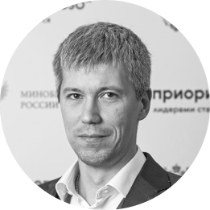
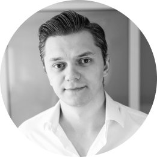
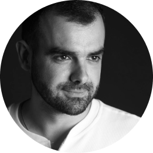
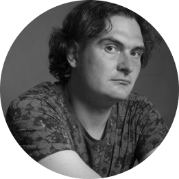
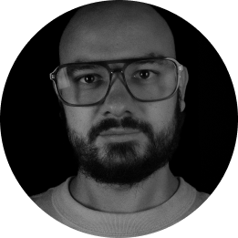
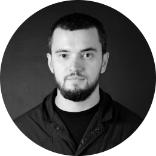
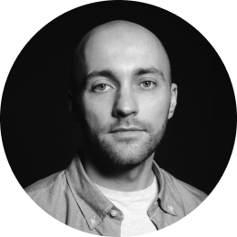

Эксперты
Эмиль Ахтямов
Директор, веб-интегратор «Паравеб»
Николай Глухих
Директор, Digital-агентство WOW
Артемий Фоминых
Директор по развитию, Брендинговое агентство lovemedo
Алена Фоминых
Генеральный директор, Брендинговое агентство lovemedo
Павел Бортвин
Заместитель директора, Компания «ИТ Форвард»

Рустам Сатрудинов
Заместитель директора по развитию, Компания «ИТ Форвард»
Александра Шмырина
Начальник управления цифровых технологий СибГМУ, Сибирский государственный медицинский университет
Алексей Сафонов
Инженер по работе с данными АНО «Центр развития образования «Интеграция»
Мария Моисеенко
Управляющий партнер консалтингового агентства «Университеты и маркетинг», Консалтинговое агентство «Университеты и маркетинг»
Диана Крез
Директор по работе с образовательными организациями, веб-интегратор «Паравеб»

Никита Воеводин
Директор, Digital-агентство RedLine
Владимир Томко
Директор по развитию, управляющий партнер, брендинговое агентство «Мелехов и Филюрин»
Максим Шумков
Директор по цифровым продуктам, ГК «Самолёт»

Микаэл Сагиров
Директор, digital-агентство Sagirov
Александр Фадеев
Директор инженерной школы информационных технологий и робототехники, Томский политех
Амирхон Рахмонов
Учредитель и директор, NAN agency

Антон Гураль
Учредитель и арт-директор, Дизайн-студия «ОГОНЬ.ДИЗАЙН»
Ольга Смирнова
Начальник управления цифрового развития, Донской государственный технический университет
Евгения Евстигнеева
Заместитель руководителя Центра проектов и практик Института дополнительного образования Университета Иннополис, Университет Иннополис

Роман Широков
SRE, Тинькофф Бизнес

Ильдар Низамеев
Учредитель, digital-агентство ilar
Дарья Казакова
Руководитель направления по работе с образовательными организациями дирекции развития агро- и биотехнологий, Иннопрактика
Александр Вишняков
Директор PR-офиса, Балтийский федеральный университет имени Иммануила Канта

Наумова Кристина
Начальник отдела информационно-Стратегических коммуникаций и рекламы, СПб ГУАП

Рустам Абдуллаев
Директор PR-офиса, Балтийский федеральный университет имени Иммануила Канта

Алексей Голодников
Инженер, компания ЮMoney
Владимир Новиков
Инцедент-менеджер в Сбере, Сбер